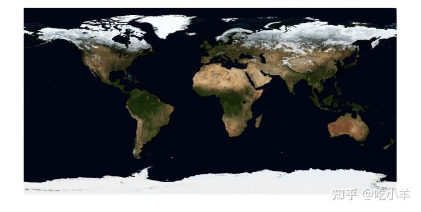
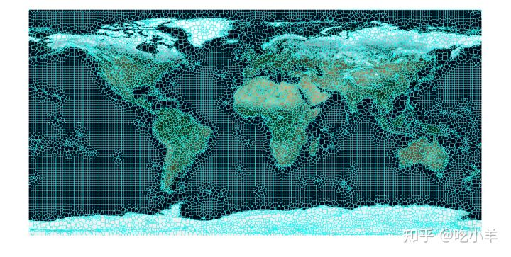
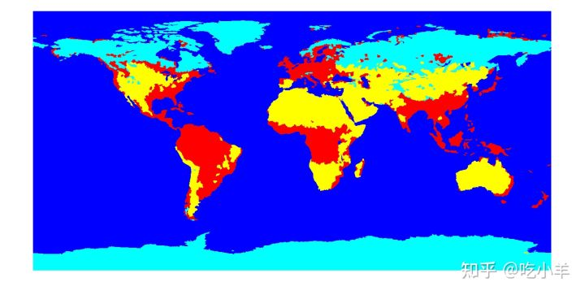
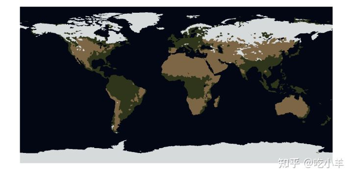

Home
本示例说明如何使用 K 均值聚类和超像素，基于颜色特征做土地类型分类。在执行分割和分类时，超像素是一种非常有用的技术，尤其是在处理大图像时。超像素使您能够将图像分解为一组结构上有意义的区域，其中每个区域的边界都考虑了原始图像中的边缘信息。一旦将图像分解为超像素区域，就可以使用分类算法对每个区域进行分类，而不必在完整的原始图像网格上解决分类问题。超像素的使用可以在解决图像分类问题方面提供很大的性能优势，同时还可以提供高质量的分割结果。
将图像读入工作区。为了获得更好的性能，此示例将图像的大小减少了一半。在视觉上，在蓝色大理石图像中仅根据颜色特征可区分四种类型的土地：森林地区、干旱/沙漠地区、冰雪覆盖地区和水域。
A = imread('http://eoimages.gsfc.nasa.gov/images/imagerecords/74000/74192/world.200411.3x5400x2700.jpg');
A = imresize(A,0.5);
imshow(A)

将图像转换为Lab色彩空间。
Alab = rgb2lab(A);
计算原始图像的超像素分割，并显示。
[L,N] = superpixels(Alab,20000,'isInputLab',true); BW = boundarymask(L); imshow(imoverlay(A,BW,'cyan'))

创建每个区域中像素集的元胞数组。
pixelIdxList = label2idx(L);
确定Lab颜色空间中每个超像素区域的中值颜色。
[m,n] = size(L);
meanColor = zeros(m,n,3,'single');
for i = 1:N
meanColor(pixelIdxList{i}) = mean(Alab(pixelIdxList{i}));
meanColor(pixelIdxList{i}+m*n) = mean(Alab(pixelIdxList{i}+m*n));
meanColor(pixelIdxList{i}+2*m*n) = mean(Alab(pixelIdxList{i}+2*m*n));
end
使用imsegkmeans函数，对每个超像素的颜色特征进行聚类。
numColors = 4; [Lout,cmap] = imsegkmeans(meanColor,numColors,'numAttempts',2); cmap = lab2rgb(cmap); imshow(label2rgb(Lout))

使用聚类中心作为主题地图的调色板。在 K 均值聚类过程中发现的平均颜色可以直接用作调色板，以对森林、冰、旱地和水的土地分类分配提供更自然的视觉解释。
imshow(double(Lout),cmap)

======================================================================
我的测试结果及程序
下面是我测试的代码：

注：本文根据MATLAB官网内容修改而成。